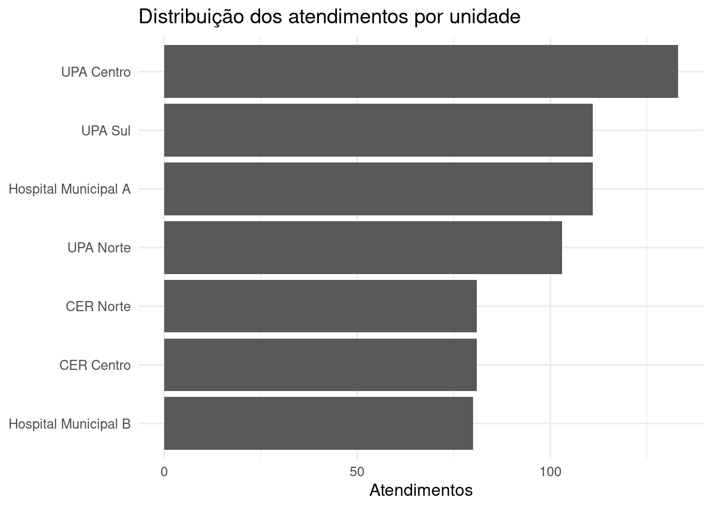
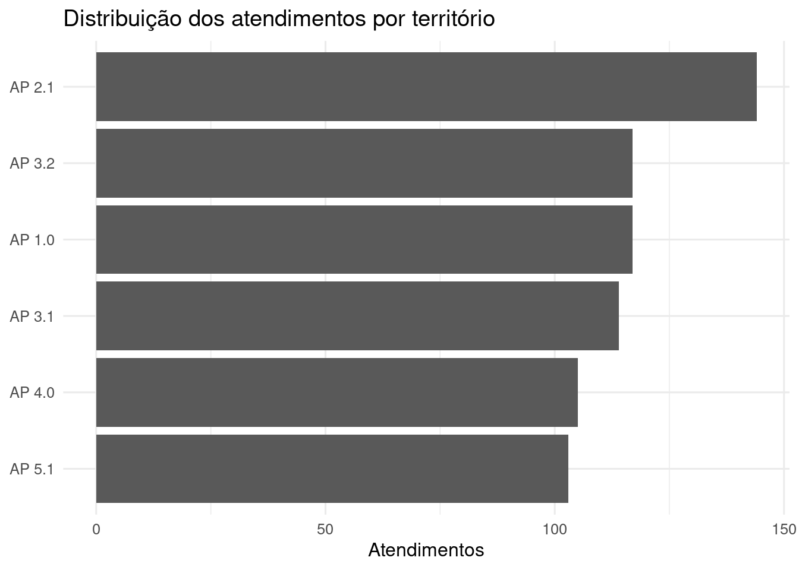
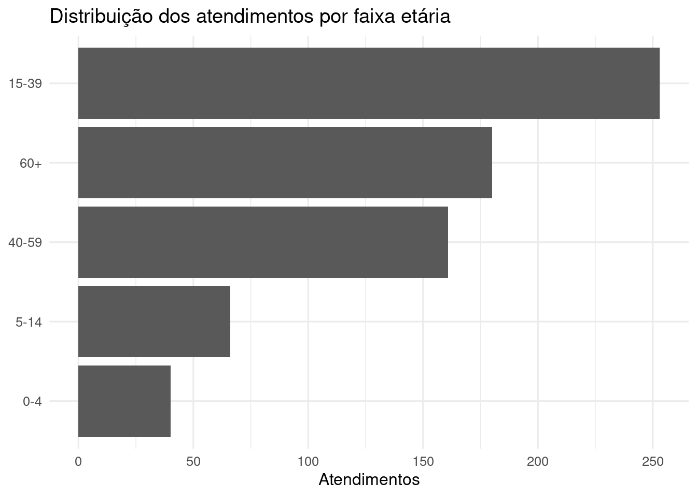
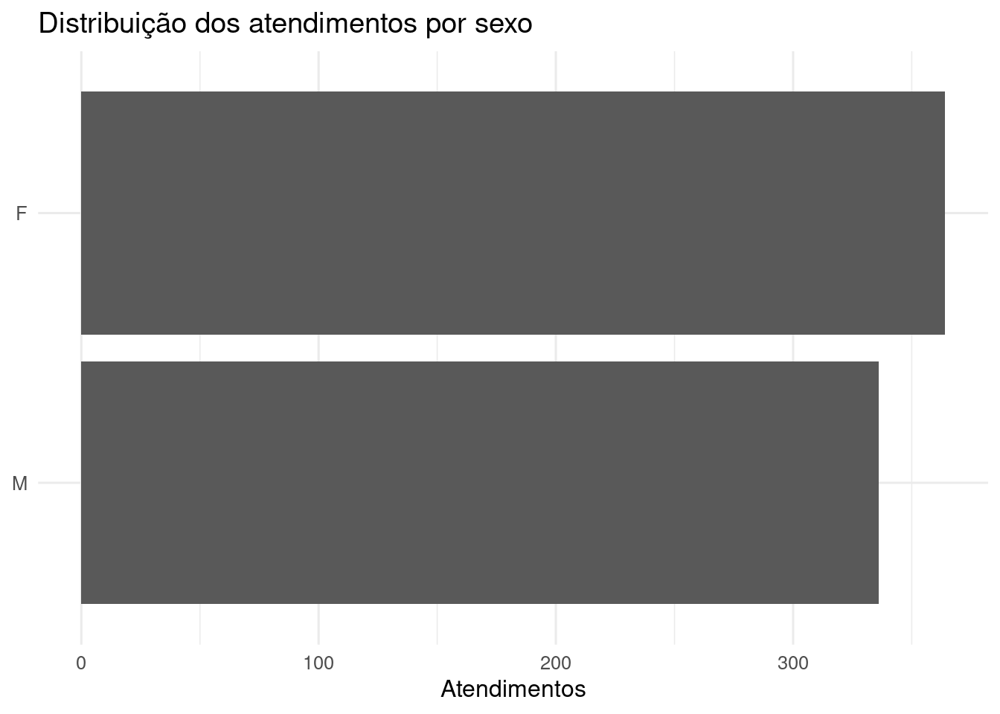

Este capítulo apresenta a base sintética utilizada para desenvolver e demonstrar o pipeline antes do recebimento dos dados reais. A proposta é simular uma base minimamente realista, com variação temporal, múltiplas unidades, perfis demográficos, CIDs, textos clínicos heterogêneos e ruídos frequentes em anamnese.
5.1 Visão geral
A base sintética tem quatro finalidades:
permitir o desenvolvimento do pipeline sem depender da base real;
testar a robustez das regras diante de textos imperfeitos;
simular CIDs coerentes, ausentes e conflitantes;
demonstrar as saídas esperadas para gestores e equipe técnica.
NoteUso com dados reais
Quando a base real estiver disponível, a etapa de geração sintética será substituída pela leitura da base do cliente. O restante do pipeline será mantido, desde que os campos sejam mapeados para o schema interno.
5.2 Geração da base sintética
A base é gerada de forma reprodutível, usando uma semente fixa. Caso o arquivo ainda não exista, ele será criado automaticamente.
Ver código
if (!file.exists("data/atendimentos_sinteticos.csv")) {save_synthetic_attendances(path ="data/atendimentos_sinteticos.csv",n =700,seed =123 )}dados_raw <- readr::read_csv("data/atendimentos_sinteticos.csv",show_col_types =FALSE)dplyr::glimpse(dados_raw)
Rows: 700
Columns: 16
$ record_id <chr> "SYN0001", "SYN0002", "SYN0003", "SYN0004"…
$ data_atendimento <date> 2025-01-02, 2025-01-04, 2025-01-04, 2025-…
$ unidade <chr> "Hospital Municipal B", "Hospital Municipa…
$ territorio <chr> "AP 2.1", "AP 5.1", "AP 3.2", "AP 5.1", "A…
$ bairro <chr> "Campo Grande", "Botafogo", "Méier", "Camp…
$ idade <dbl> 80, 81, 68, 6, 49, 26, 10, 29, 56, 69, 80,…
$ faixa_etaria <chr> "60+", "60+", "60+", "5-14", "40-59", "15-…
$ sexo <chr> "M", "M", "F", "M", "M", "M", "M", "M", "F…
$ cid <chr> "B34", "A39", "B34", "A08", NA, "J06", "A0…
$ cid_nome <chr> "Infecção viral de localização não especif…
$ queixa <chr> "Febre e dor no corpo", "Febre e cefaleia"…
$ anamnese <chr> "Refere febre não aferida, dor no corpo im…
$ texto_clinico <chr> "Febre e dor no corpo Refere febre não afe…
$ sindrome_esperada_sintetica <chr> "febril_inespecifica", "febril_neurologica…
$ cid_status_sintetico <chr> "coerente", "coerente", "coerente", "coere…
$ febre_negada_sintetica <lgl> FALSE, FALSE, FALSE, FALSE, FALSE, FALSE, …
5.3 Schema interno
O pipeline trabalhará sempre com um conjunto mínimo de campos padronizados.
Campo
Descrição
record_id
Identificador único do atendimento
data_atendimento
Data do atendimento
unidade
Unidade de saúde
territorio
Território ou área programática simulada
bairro
Bairro simulado
idade
Idade em anos
faixa_etaria
Faixa etária padronizada
sexo
Sexo informado
cid
CID principal ou relacionado
cid_nome
Nome ou descrição do CID
queixa
Queixa principal
anamnese
Texto da anamnese
texto_clinico
Campo textual consolidado
texto_clinico_norm
Texto clínico normalizado
5.4 Mapeamento da base
Mesmo que a base do cliente tenha nomes diferentes, o pipeline depende apenas do mapeamento correto.
plot_bar_distribution( dados, unidade,"Distribuição dos atendimentos por unidade")

5.8 Distribuição por território
Ver código
plot_bar_distribution( dados, territorio,"Distribuição dos atendimentos por território")

5.9 Distribuição por faixa etária
Ver código
plot_bar_distribution( dados, faixa_etaria,"Distribuição dos atendimentos por faixa etária")

5.10 Distribuição por sexo
Ver código
plot_bar_distribution( dados, sexo,"Distribuição dos atendimentos por sexo")

5.11 Perfil dos CIDs na base sintética
Ver código
dados |> dplyr::count(cid_status_sintetico, sort =TRUE) |> knitr::kable()
cid_status_sintetico
n
coerente
525
ausente
130
conflitante
45
5.12 Exemplos de textos clínicos
Abaixo são apresentados exemplos de textos sintéticos. Eles incluem variações de escrita, erros comuns, caixa alta, ausência de acentos, abreviações, sintomas misturados e negações.
Febre e tosse PACIENTE REFERE FEBRE HÁ CERCA DE TRÊS DIAS, TOSSE SECA PERSISTENTE, CORIZA E DOR DE GARGANTA. NEGA DIARREIA, NEGA EXANTEMA E NEGA SANGRAMENTOS. RELATA CONTATO COM FAMILIAR GRIPADO NA ÚLTIMA SEMANA.
SYN0566
2025-10-18
Hospital Municipal A
F
65
A95
coerente
Febre e icterícia FEBRE, ICTERÍCIA E SANGRAMENTO GENGIVAL DISCRETO. REFERE DOR EM PANTURRILHAS.
SYN0190
2025-04-13
Hospital Municipal A
F
23
A27
conflitante
Febre e cefaleia Criança com febre e convulsão em casa. Sonolenta na chegada, com irritabilidade importante.
SYN0198
2025-04-16
UPA Centro
M
64
NA
ausente
Febre e dor no corpo Refere fbre não aferida, dor no corpo importante, cefaleia e mal estar geral. Nega tosse, nega diarreia e nega sangramento.
SYN0253
2025-05-12
UPA Sul
M
20
B34
coerente
Febre e dor no corpo Paciente relata febre baixa, artralgia e cansaço. Nega sangramentos, nega rash e nega vômitos.
SYN0219
2025-04-25
UPA Sul
F
41
J18
coerente
Febre e tosse Criança com febre, tosse persistente e nariz escorrendo. Mãe nega manchas vermelhas e nega episódios de diarreia.
SYN0301
2025-06-09
UPA Norte
M
30
NA
ausente
Febre e tosse Paciente refere febre há cerca de três dias, tosse seca persistente, coriza e dor de garganta. Nega diarreia, nega exantema e nega sangramentos. Relata contato com familiar gripado na última semana. !!!
SYN0261
2025-05-16
UPA Sul
F
3
J02
coerente
Febre e tosse Paciente refere febre há cerca de três dias, tosse seca persistente, coriza e dor de garganta. Nega diarreia, nega exantema e nega sangramentos. Relata contato com familiar gripado na última semana.
SYN0085
2025-02-18
Hospital Municipal B
M
6
NA
ausente
Febre e diarreia Paciente com febre, náuseas, vômitos e diarreia desde ontem. Refere dor abdominal em cólica e baixa aceitação alimentar.
SYN0700
2025-12-31
CER Norte
F
50
G00
coerente
Febre e cefaleia Paciente com febre, cefaleia intensa, rigidez de nuca e fotofobia. Refere vômitos e piora progressiva desde a manhã.
5.13 Persistência em DuckDB
A base padronizada é persistida em um banco local DuckDB. Essa etapa antecipa a lógica de produto: cada resultado intermediário do pipeline poderá ser salvo e auditado.
Ver código
con <-connect_duckdb()init_duckdb_schema(con)run_id <-new_run_id("preparacao")write_atendimentos(con = con,dados = dados,overwrite =TRUE)write_execution_log(con = con,run_id = run_id,etapa ="preparacao_dados",n_registros =nrow(dados),observacao ="Carga sintética padronizada e persistida em tb_atendimentos.")duckdb_counts(con) |> knitr::kable()
tabela
n
tb_atendimentos
700
tb_classificacao_cid
700
tb_classificacao_final
700
tb_classificacao_llm
200
tb_classificacao_regex
700
tb_comparacao_camadas
700
tb_execucoes
154
Ver código
DBI::dbDisconnect(con, shutdown =TRUE)
5.14 Observações para implantação
A base sintética não substitui a avaliação com dados reais. Seu papel é permitir o desenvolvimento inicial e a demonstração do método. Na implantação, a equipe deverá avaliar:
completude dos campos textuais;
padronização dos CIDs;
presença de abreviações locais;
frequência de campos vazios;
qualidade da data de atendimento;
existência de múltiplos textos por atendimento;
necessidade de regras específicas por serviço ou unidade.
ImportantPonto metodológico
A capacidade de adaptar o mapeamento de campos é central para o produto. O pipeline não deve depender do nome original das colunas da base do cliente, mas sim do schema interno definido neste documento.